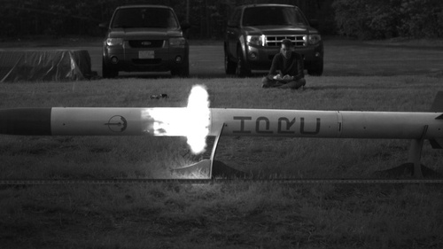

Sirius and Polaris
WPI High Power Rocketry Club 2020-2021
On the WPI High Powered Rocket Club for 2020–2021, I served as the rocket division lead, leading ~40 students in the design, analysis, manufacturing and testing of the competition rocket.
Our third competition year presented significant challenges to overcome , particularly due to the pandemic. Our team was unable to compete in the NASA USLI competition due to travel and meeting restrictions. Despite this, we continued to construct our vehicle and completed it by the end of the school year. We plan to launch once restrictions lift.
Our team continued to develop our engineering skills with new and innovative systems. This year's vehicle included our first active airbraking system, allowing us to precisely target a desired apogee during flight. I proposed an innovative actuator design using a curved-slot CAM plate, and worked closely with the team to analyze the kinematics and dynamics of the mechanisim and optimize the design. I also lead the CFD analysis of the airbrakes to determine drag and negative aerodynamic effects, and developed a MATLAB script to extract data from the . With results from the drag analysis I helped to develop the control system for the airbrakes and conducted simulations using a custom extension written for OpenRocket.
We also designed and manufactured our first single-board flight computer utilizing KiCAD and the Arduino environment, allowing a single source for data collection, telemetry, and airbrake control.
I also guided members throughout the entire design process. I taught members how to use SOLIDWORKS for CAD and FEA, and assisted members as they learnt to use ANSYS Mechanical. I guided the analysis of structures for motor retention and the recovery system within the rocket, as well as a analysis of the composite fins to determine flutter velocity. I created a detailed mission analysis to determine flight parameters, using both OpenRocket and an improved version of the MATLAB 3DOF simulation I developed the previous year. I also lead the testing of the recovery system of the vehicle, culminating in a full scale test to verify correct ejection.
As a part of this project, I used and developed my skills in engineering design, DFM/DFA, SOLIDWORKS, finite element analysis, additive manufacturing, CNC machining, composite analysis and manufacturing, electronics design and assembly, and MATLAB programming
